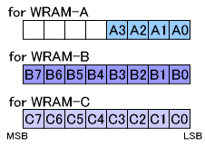

#include <twl/mi.h>u8 MI_GetAllocatableWramSlot( MIWramPos wram, MIWramProc proc );(define)#define MI_GetAllocatableWramSlot_A( MIWramProc proc );#define MI_GetAllocatableWramSlot_B( MIWramProc proc );#define MI_GetAllocatableWramSlot_C( MIWramProc proc );| wram | The WRAM to get information about. |
| proc | Processor. Gets the WRAM banks that can be assigned to this processor. Specify either MI_WRAM_ARM9, MI_WRAM_ARM7, or MI_WRAM_DSP. |
Returns information about those WRAM slots in the specified WRAM region that can be assigned to the specified processor. Returns slot values ranging from 0 to 3 for WRAM-A, or slot values ranging from 0 to 7 for WRAM-B and WRAM-C.
Gets information about which WRAM slots of the specified WRAM region can be assigned to the specified processor.
Assignable slots:
Assignable slots:
- The slot must not be assigned to any processor.
- The slot must either not be reserved by any processor, or must be reserved by the specified processor.
To be assignable, a slot must meet both conditions.
About the return values:
The lower bits of the u8 value indicate slot 0, slot 1, and so on (in order). If a given bit is 1, it means that the corresponding slot can be assigned.
For example, if the return value of MI_GetAllocatableWramSlot( MI_WRAM_B, MI_WRAM_ARM9 ) is 0xC0 (11000000 in binary), this indicates that WRAM-B slots 0, 1, 2, 3, 4, and 5 cannot be assigned to the ARM9 (these slots are already either assigned to another processor or reserved for another processor), and that slots 6 and 7 can be assigned to the ARM9.

If MI_WRAM_FREE is specified for the processor:
Normally, you specify MI_WRAM_ARM9, MI_WRAM_ARM7, or MI_WRAM_DSP as the proc argument to determine which WRAM slots can be allocated for the given processor, but it is also possible to specify MI_WRAM_FREE as a special way of using this function.
By specifying MI_WRAM_FREE, it is possible to obtain information about which WRAM slots are completely free (those slots that are not reserved for or allocated by anything), but there is also a separate function for doing just this, MI_GetFreeWramSlot(). We recommend using MI_GetFreeWramSlot().
Examples
Under the situation described above, the results will be as follows:
MI_GetAllocatableWramSlot( MI_WRAM_B, MI_WRAM_ARM9 )→ 0x0C
MI_GetAllocatableWramSlot( MI_WRAM_B, MI_WRAM_ARM7 )→ 0x48
MI_GetAllocatableWramSlot( MI_WRAM_B, MI_WRAM_DSP )→ 0x08
MI_GetAllocatableWramSlot( MI_WRAM_C, MI_WRAM_ARM9 )→ 0xDF
MI_GetAllocatableWramSlot( MI_WRAM_C, MI_WRAM_ARM7 )→ 0xD8
MI_GetAllocatableWramSlot( MI_WRAM_C, MI_WRAM_DSP )→ 0xD8
MI_GetAllocatableWramSlot( MI_WRAM_A, MI_WRAM_ARM9 )→ 0x00
MI_GetAllocatableWramSlot( MI_WRAM_A, MI_WRAM_ARM7 )→ 0x0F
MI_GetAllocatableWramSlot( MI_WRAM_A, MI_WRAM_DSP )→ 0x00
Convenience functions that include the WRAM type in the function name:
MI_GetAllocatableWramSlot_A(...) is the #define directive of MI_GetAllocatableWramSlot( MI_WRAM_A, ... ).MI_GetAllocatableWramSlot_B(...) is the #define directive of MI_GetAllocatableWramSlot( MI_WRAM_B, ... ).MI_GetAllocatableWramSlot_C(...) is the #define directive of MI_GetAllocatableWramSlot( MI_WRAM_C, ... ).
The WRAM manager managed by the ARM9 determines the return value.
The ARM7 gets values from the ARM9 through PXI.
Overview (Work RAM)
MI-Related Constants
MI_GetFreeWramSlot
MI_GetUsedWramSlot
2008/05/29 Initial version.
CONFIDENTIAL